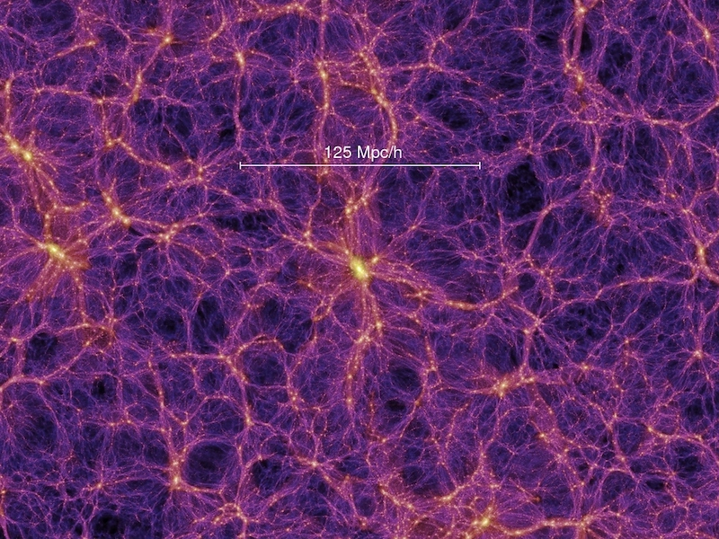
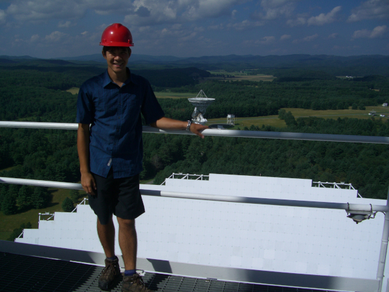

Research
I am interested in the use of the large-scale structure of the Universe to Understand both the early and modern Universe. The first fraction of a second of the universe’s evolution is still poorly understood, and the discovery that the Universe's expansion is accelerating casts doubts into our understanding of its future. We can gain insight into these issues by studying how matter is distributed on very large scales, much large than galaxies. Matter in the universe is organized into large structures of many thousands of galaxies called clusters, filaments, and sheets, with gigantic voids between them. These structures result from the gravitational collapse of tiny perturbations that existed in the early Universe. By studying the detailed statistics of the large-scale structure we can learn about the processes that generated them. In addition, the expansion of the universe pulls on the structure, providing a probe into the Universe's acceleration.
In particular I use radio telescopes to make observations of the large-scale structure using the technique of hydrogen intensity mapping. This is a relatively new way to study the Universe and will allow us to map more of the Universe's Volume than ever before.
Tangentially, I am also working on fast radio bursts - millisecond bursts of radio energy coming from outside our Galaxy - and how they might be used to study the Universe.
Current projects (with links)
Canadian Hydrogen Intensity Mapping Experiment (CHIME)
Next generation of radio telescope being build in British Columbia, which will study large-scale structure and fast radio bursts.
Here are some descriptions of the experiment in Nature News and by CIFAR.
The Hydrogen Mapping Survey with the Green Bank Telescope (GBT)
The most successful hydrogen mapping survey to date using the worlds largest steerable telescope.
A Nature News and Views article about the project.
Fast Radio Bursts
A proposal to use these bursts to study the Universe is described in APS's Physics.
The discovery of FRB 110523 was profiled by National Geographic and Scientific American.
Code
I house my software projects at github. My user name is kiyo-masui.